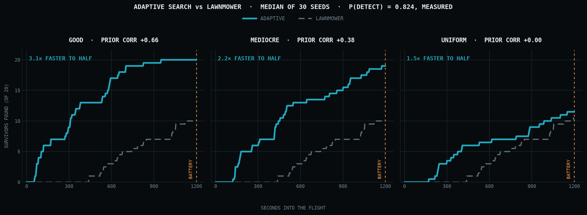
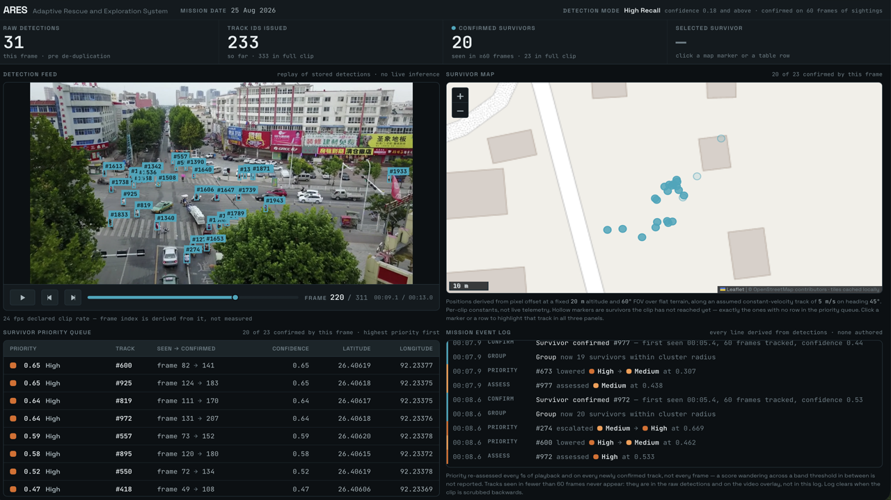
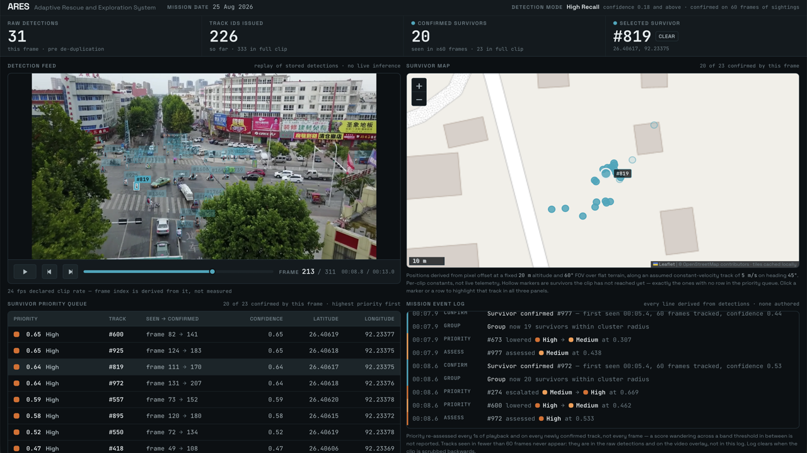
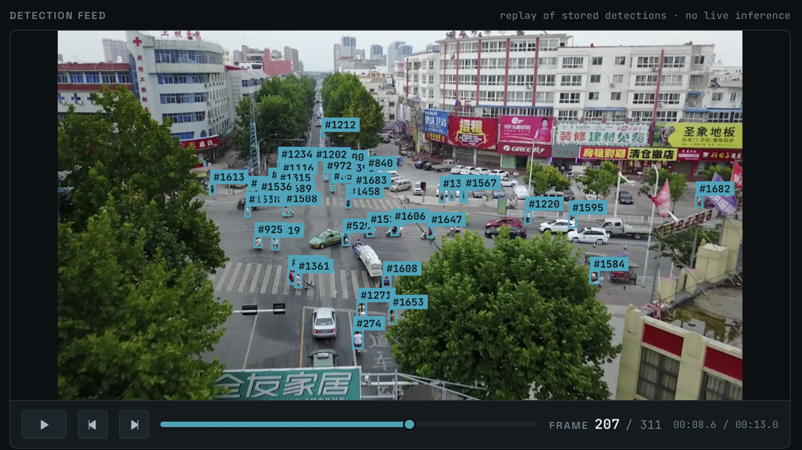

A detector over a crowded scene returns thousands of boxes. A rescue coordinator needs how many, where, and who first. ARES is everything in between — running on the aircraft, so losing the network costs the video feed and nothing else.
A person walks in and out of frame six times. Six people, or one? A detector has no memory between frames — and at a threshold tuned to miss nobody, it also reports every shadow. Watch what that costs, and what removes it.
Each stage exists because the one before it produces something not yet usable. They exchange a single JSON format — which is what lets three people work independently, and what lets the demo replay a stored file instead of inferring live.
Boxes and confidences at 960 px, threshold 0.18. Finds people — but has no memory between frames.
Persistent IDs across frames, so the same person is never counted twice. Position is still in pixels.
Pixel offset → GPS from known altitude and field of view. 1.8 cm per pixel. Now they are on a map.
⚠ assumes the camera points straight down — § 03Confidence, cluster size and hazard proximity, in a formula printed on screen. Not a black box.
Every pin on the map comes out of one line of trigonometry that assumes the camera points at nadir. A multirotor translates only by tilting — there is no other way for it to make horizontal thrust. So the moment the aircraft moves between search cells, the assumption is false, and every pixel in that frame projects to the wrong place. We went looking for how wrong.
| Tilt | Shift at 20 m | Of footprint |
|---|---|---|
| 5° | 1.75 m | 7.6 % |
| 10° | 3.53 m | 15.3 % |
| 20° | 7.28 m | 31.5 % |
| 30° | 11.55 m | 50.0 % |
At 20° every pin moves 7.3 m — about half the 15 m radius the cluster term is scored over. That is enough to merge two groups or split one, and group size is a scored term. The error does not stop at the coordinate: it propagates into the order the dashboard tells you to rescue people in.
Altitude error barely matters beside it — ground sample distance is linear in height, so a 0.4 m excursion is a 2 % scale error, 0.46 m across the whole frame. Tilt is the term worth engineering against; height hold is not. The angles come from a quadcopter PID study on Swift Pico in MuJoCo — a 1.525 kg airframe, hover at 68.4 % of maximum thrust, no aerodynamic damping, which measured altitude leaving its tolerance band exactly while pitch and roll were making their large corrections. That is a different airframe in a different simulator, so the angles are the right order of magnitude rather than ARES's own numbers; the displacement arithmetic is exact for any airframe. The pins in the demo are not corrected for this and cannot be — they come from stored VisDrone and C2A footage whose true camera attitude is unknown, so the assumption is undischarged in both directions. This is the specific reason IMU fusion is on the roadmap: it is worth about seven metres.
A missed survivor cannot be recovered. The costs are wildly asymmetric, so the confidence threshold should be too — ours is 0.18, not the conventional 0.5, read off the validation run's precision-recall curve.
More survivors found, for every thousand present. That is the entire argument for this system's most important parameter.
At 0.18 the detector reports anything person-shaped — a shadow, a bag, a patch of rubble — and the tracker gives each one an identity. That is why 333 identities exist for 23 people.
We measured those short tracks: mean confidence 0.42 against 0.52 for long ones, and only 7% starting or ending at the frame edge. Low confidence, mid-frame, gone in a frame or two is flicker — not someone walking out of shot.
So the filter is persistence, not a higher threshold. A track must hold for 2.5 seconds. Expressed as a duration, because that is 60 frames on this clip and 12 on device at 4.8 FPS.
Nothing in the "described" row is simulated, mocked or implied anywhere in the product. We would rather answer hard questions about what is on the screen.
| CAPABILITY | STATUS | DETAIL |
|---|---|---|
| On-device inference | Built | YOLOv12s INT8, 100 % on the Hexagon NPU — measured on Qualcomm silicon |
| Counting & tracking | Built | ByteTrack with a measured persistence filter |
| Geo-tagged mapping | Built | Nadir projection from assumed altitude and FOV |
| Priority ranking | Built | A transparent weighted formula, printed on screen |
| Command dashboard | Built | Works with the backend switched off |
| Offline resilience | Built | A consequence of on-device inference, not a feature |
| Adaptive search planning | Simulated | A 100-seed study against a lawnmower baseline — § 06. Never flown |
| RGB + thermal fusion | Partial | Both detectors built and measured — thermal recall 0.883 on HIT-UAV. Fusion itself is specified, not built. Public datasets; we own no thermal camera |
| Hazard classification | Not built | Nothing trained. Scope narrowed to 3 of 7 classes — fire/smoke, flood, collapse — and AIDER selected. HAZARDS is empty and the score drops the term |
| Autonomous nav · SLAM | Described | Architecture only. Deliberately not built, and not mocked |
Because the classifier does not exist yet. A fire on the map would make the ranking respond to something we made up, so the scoring drops the term and says it did.
There is no aircraft. The dashboard shows the constants it computed with instead, each tagged assumed, chosen, derived or measured.
No drone, so the clip is a public UAV dataset. Every box on it is our trained model's actual output over that footage.
It needs to not miss the ground. We measured ours on Qualcomm AI Hub, on real hosted silicon: 4.8 FPS on a Dragonwing RB3 Gen 2 and 16.1 FPS on an IQ-9075, at 960 px INT8, under 7 MB peak memory — with 489 of 489 layers executing on the Hexagon NPU.
The 100 % is the headline, not the frame rate. An attention-centric YOLOv12 maps completely onto the accelerator, with nothing falling back to CPU.
| BOARD | SILICON | INPUT | LATENCY · MEDIAN | FPS | PEAK MEM | ON NPU |
|---|---|---|---|---|---|---|
| Dragonwing RB3 Gen 2 Shipped | QCS6490 | 960 | 209.5 ms | 4.8 | 3 – 7 MB | 489/489 · 100 % |
| Dragonwing IQ-9075 EVK | QCS9075 | 960 | 62.3 ms | 16.1 | 2 – 6 MB | 489/489 · 100 % |
| Dragonwing RB3 Gen 2 | QCS6490 | 640 | 28.4 ms | 35.2 | 3 – 6 MB | 489/489 · 100 % |
| Dragonwing IQ-9075 EVK | QCS9075 | 640 | 14.0 ms | 71.2 | 6.5 MB | 489/489 · 100 % |
Qualcomm AI Hub · hosted physical devices, not emulators · INT8 weights and activations · qnn_context_binary · QAIRT 2.45.0 · measured 26 Aug 2026. We publish the RB3 figure, not the IQ-9075's 16.1 — it is the slower of the two boards and the drone-class one. Quoting the better of two measurements is not reporting.
| RUN | MINIMUM | MEDIAN | OVERSTATED BY |
|---|---|---|---|
| RB3 · 960 | 207.6 ms | 209.5 ms | 0.9 % |
| IQ-9075 · 960 | 61.4 ms | 62.3 ms | 1.5 % |
| RB3 · 640 | 26.5 ms | 28.4 ms | 7.2 % |
| IQ-9075 · 640 | 10.48 ms | 14.04 ms | 34.0 % |
| COST OF 960 OVER 640 | RATIO |
|---|---|
| Pixel count | 2.25× |
| Tesla T4 GPU | 2.62× |
| Attention's quadratic ceiling | 5.06× |
| IQ-9075 NPU | 4.44× |
| RB3 Gen 2 NPU | 7.38× |
Left — AI Hub's estimated_inference_time, and the
"minimum inference time" on its console, is the fastest of ~100 samples. We quoted it.
Every figure on this page is now the median. The gap scales inversely with the
measurement: at 200 ms per inference it is under 1 %, at 14 ms it is a third.
DEVICE_FPS = 4.8 survived unchanged — which was luck, not diligence.
Right — the IQ-9075 lands inside the band where a mix of quadratic attention and linear
convolution belongs; the weaker RB3 is still above it, plausibly memory pressure.
Two devices is not a trend. Settling it means benchmarking a pure-convolution
YOLOv8n at both sizes on the same board.
At 4.8 FPS the aircraft gets about 22 looks at every patch of ground before it leaves the frame. Compute stopped being the binding constraint — the hard problem is per-look recall, and that is where the effort went.
We measured 640 too: 35.2 FPS, about 163 looks. But detection failures across consecutive frames are correlated — a person too small to resolve stays too small. That is 141 extra chances to re-fail, for 4.7 points less recall.
Every latency above is INT8; every accuracy figure is FP32. They are two different models until we measure the quantised one, so we report them separately and say so.
A search UAV today flies a lawnmower grid — cell 1, cell 2, cell 3, to the end of the battery. It is complete, it is predictable, and it cannot use a single thing it learns on the way. Twenty minutes of flight covers about half a 500 m square, so which half you fly is the whole problem.
Dividing by travel time means a slightly worse cell that is much closer can win. "Sweep the area around a find" is arithmetic here, not a special case.
Staleness grows in any cell nobody has looked at, so an ignored one eventually outranks a mildly interesting one. Priority changes the order, not the promise.
The Bayesian update uses our measured 0.824 recall. Because it is not 1.0, flying over a cell and seeing nobody never drives belief to zero.

100 seeds · both planners fly identical worlds — same survivors, same battery, same detection coin-flips — so the only thing that varies is where they choose to go. Prior correlation is measured against ground truth and reported; it is not a tuned dial.
| PLANNER | FOUND / 20 | TIME TO HALF | REACHED 80 % | AREA COVERED |
|---|---|---|---|---|
| GOOD PRIOR · CORRELATION +0.65 | ||||
| Lawnmower | 11.0 | 905 s | 10 / 100 | 55 % |
| Adaptive | 20.0 | 291 s | 81 / 100 | 33 % |
| MEDIOCRE PRIOR · CORRELATION +0.38 | ||||
| Lawnmower | 11.0 | 905 s | 10 / 100 | 55 % |
| Adaptive | 19.0 | 430 s | 79 / 100 | 42 % |
| UNIFORM PRIOR · CORRELATION −0.01 · NO INFORMATION AT ALL | ||||
| Lawnmower | 11.0 | 905 s | 10 / 100 | 55 % |
| Adaptive | 11.0 | 715 s | 18 / 100 | 48 % |
Medians across 100 seeds. The column that says the most is reached 80 %: a lawnmower gets there in 10 runs out of 100 whatever the prior, because it cannot use information. Adaptive with a usable map gets there in 81.
Going from no information to a half-wrong map takes the count from 11 to 19 of 20. Going from half-wrong to good adds one more. So the hazard classifier's job is stop the map being blank, not be precise — and open building footprints alone would likely do most of it.
At correlation −0.01 it still reaches half 1.3× faster, and 80 % in 18 runs against 10. Not from the prior — from what it learns in flight. Nothing is attractive at launch, so it starts out flying a grid; the first person it finds makes it work that ground instead of marching on. It finds no more people overall, though.
33 % of the area against the lawnmower's 55 %. More people, sooner, over less ground. If the objective were map everything rather than find people fast, the lawnmower wins — and that belongs in the table, not a footnote.
“In simulation, with a detector at our measured 0.824 recall, adaptive search reached half the survivors 3.1× faster than a lawnmower grid and found 20 of 20 against 11.”
“Our system finds survivors 3× faster.”
The second is a flight claim and there is no aircraft. No wind, no GPS error, no obstacles, and survivors that do not move. The prior is synthetic — its correlation is a swept parameter, not a measurement of any real information source. Two bugs were found and fixed by watching coverage rather than the headline; both are written up in simulation/RESULTS.md along with everything above.
Trained on combined C2A and VisDrone under one unified person class. Every figure from the validation run — none estimated.
For context: YOLO12s scores 48.0 mAP50-95 on COCO — mostly large, centred, well-lit objects. ARES scores 57.7 on small humans seen from directly above, from 9.2 M parameters.



The clip above is a VisDrone urban sequence — dense, annotated, and public. We use it because no annotated disaster video exists at that scale, and we do not own a drone. The model itself is trained on combined C2A + VisDrone, and C2A is people in disaster scenes.
We do not have a figure here of the shipped weights run over C2A stills, because we do not redistribute the dataset and will not render one from imagery we cannot publish alongside it. The fine-tuning runs are in the repository instead — experiments/Perception/C2A/ holds the validation batches, the confusion matrices and the PR curves, which is the same evidence in a form you can check rather than look at.
Every claim on this page has something moving behind it. These are screen recordings of the system running, narrated live — not an edit of a presentation.
The long form is the engineering handbook — thirteen parts, from what a convolution is to why the priority score is a weighted sum you can read rather than a model you cannot.
Detection model, hazard classifier, on-device benchmark, backend and dashboard.
Tracking, pixel-to-GPS localization, and the rescue priority scoring logic.
Pitch, presentation and the recorded demo.